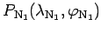
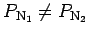
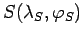
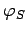
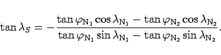
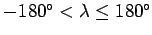
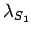
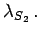
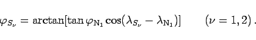

Inhalt Index DeskTop Bronstein

 Geometrie Sphärische Trigonometrie Berechnung sphärischer Dreiecke Schnittpunkte sphärischer Kurven
Geometrie Sphärische Trigonometrie Berechnung sphärischer Dreiecke Schnittpunkte sphärischer Kurven


Die betrachteten Orthodromen sollen die nordpolnächsten Punkte  und besitzen, wobei  gilt. Einsetzen des Schnittpunktes  in beide Orthodromengleichungen führt auf das Gleichungssystem
| (3.253b) |
Elimination von  und die Anwendung der Additionstheoreme auf die Kosinusfunktionen ergeben:
|  | (3.254) |
Diese Gleichung liefert im Definitionsbereich  der geographischen Längen zwei Lösungen  und  Die dazugehörigen geographischen Breiten ergeben sich aus (3.253a):
|  | (3.255) |
Die Schnittpunkte S1 und S2 sind Gegenpunkte, d.h., sie gehen durch eine Spiegelung am Kugelmittelpunkt auseinander hervor.